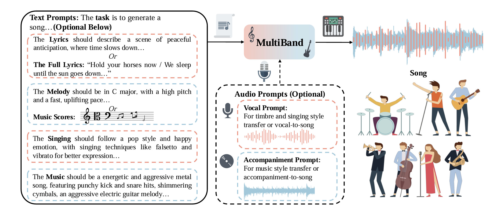

Multi-Task Song Generation with Personalized Prompt-Based Control
Anonymous Authors
Abstract.
Song generation focuses on producing controllable high-quality songs based on various prompts.
However, existing methods struggle to generate vocals and accompaniments with prompt-based control and proper alignment.
Additionally, they fall short in supporting various tasks.
To address these challenges, we introduce MultiBand, the first multi-task song generation model for synthesizing high-quality, aligned songs with prompt-based control.
MultiBand comprises these primary models:
1) VocalBand, a decoupled model, leverages the flow-matching method for singing styles, pitches, and mel-spectrograms generation, allowing fast, high-quality vocal generation with style control.
2) AccompBand, a flow-based transformer model, incorporates the Band-MOE, selecting suitable experts for enhanced quality, alignment, and control.
This model allows for generating controllable, high-quality accompaniments aligned with vocals.
3) Two generation models, LyricBand for lyrics and MelodyBand for melodies, contribute to the comprehensive multi-task song generation system, allowing for extensive control based on multiple prompts.
Experimental results demonstrate that MultiBand performs better over baseline models across multiple tasks using objective and subjective metrics.
Overview

In this paper, we introduce MultiBand, the first multi-task song generation model for synthesizing high-quality, aligned songs with prompt-based control.
Following the human perception that accompaniment complements vocal melody with complex harmonic and rhythmic structure, we generate them separately.
To achieve fast and high-quality vocal generation with control, we design a decoupled model VocalBand, predicting singing styles, pitches, and mel-spectrograms based on the flow-matching method.
Based on the complex nature of music, we introduce a flow-based transformer model AccompBand to generate high-fidelity, controllable, aligned accompaniments.
We design Band-MOE (Mixture of Experts), selecting suitable experts for enhanced quality, alignment, and control.
Additionally, we add two generation models, LyricBand for lyrics and MelodyBand for melodies, contributing to the comprehensive multi-task song generation system.
Our experiments on open-source and web-crawled bilingual song datasets show MultiBand can generate high-quality songs with control, outperforming baseline models in multiple song generation tasks.
Note: For a fair comparison, all samples are resampled to 24kHZ and normalized to -23dB LUFS.
In this section, we present generated samples of song generation.
We input full lyrics, music scores, singing and music styles as text prompts and optional timbre prompt to generate songs via VocalBand and AccompBand.
Lyrics
Singing Styles
Music Styles
Generated Vocal
Generated Accompaniment
Generated Song
想要跟你一起走到最后，但我遗失了地
A male vocalist sings this pop song with a soft and melodic tone, skillfully incorporating mixed voice and falsetto to enhance its emotional depth. The performance is emotional, sentimental, pensive, melancholic, and romantic. It carries a passionate and heartfelt mood, perfectly complementing the soft rock style of the song.
The accompaniment features a medium tempo with a keyboard providing a melodic backdrop, steady drumming, a consistent bass line, and rhythmic acoustic guitar. The arrangement is mellow, soft, and emotional, evoking a sentimental, pensive, melancholic, and romantic atmosphere characteristic of soft rock, enhancing the song's passionate and emotional essence.
第十三月你就如期出现，海之角也不再遥远
A female vocalist sings melodically with a smooth and expressive delivery. The vocal performance incorporates falsetto, mixed voice, and glide techniques, enhancing the melody's dynamic and emotive qualities. The tone is light and easygoing, aligning with the relaxed atmosphere suitable for a teenage drama TV show soundtrack.
The main melody is carried by the electric guitar, with the bass guitar providing a subtle background foundation. The rhythm is driven by a simple acoustic drum beat, creating a lively yet easygoing atmosphere, perfectly capturing the lighthearted and relaxed feel suitable for a teenage drama TV show soundtrack.
喝着奶茶，我毫不在意，我继续我的生活，不管你在哪里，分手然后Say nono
A soft female vocal delivers an emotional and passionate performance. The singing style is delicate yet expressive, with a smooth tone that conveys depth and feeling. The vocal incorporates subtle dynamics and emotive phrasing, perfectly blending with the rhythm-driven accompaniment.
The music features a punchy kick drum driving the rhythm, accompanied by a groovy bass line that adds depth and energy. Shimmering hi-hats and crash cymbals enhance the texture, creating a vibrant and dynamic soundscape. The overall arrangement maintains a polished pop aesthetic.
See the lights, see the party, the ball gowns, see you make your way through the crowd and say, "Hello"
A female vocalist sings melodically as the lead, delivering a bright and expressive performance. Her tone is warm and cheerful, perfectly matching the upbeat country pop style. The vocal line is lively, with dynamic phrasing that enhances the energetic and lighthearted mood suitable for a teenage sitcom opening theme.
The melody is played by the electric guitar and keyboard, creating a vibrant and harmonious blend, while the bass guitar provides a steady background groove. The rhythm is driven by a simple acoustic drum beat, adding a playful and rhythmic foundation. The overall atmosphere is cheerful and energetic, embodying the country pop essence and perfectly suited for the opening theme of a teenage sitcom.
Singing Style Transfer
In this section, we present generated samples of singing style transfer.
We input full lyrics, music scores, singing and music styles as text prompts, and vocal prompts for timbre and personalized styles, to generate songs via VocalBand and AccompBand.
Lyrics
Singing Styles
Music Styles
Vocal Prompt
Generated Vocal
Generated Song
你知道吗，后来我没完全放下
A male vocalist sings the main melody with a smooth and tender tone, perfectly conveying the romantic mood of the song. The delivery is emotive and heartfelt, with gentle phrasing and dynamic control to enhance the intimate atmosphere. The voice is the centerpiece, carrying the melody with a sense of sincerity and depth, making it ideal for a romantic movie soundtrack.
The accompaniment features a synth playing the same melody softly in the background, complementing the male vocal and adding a subtle, ethereal texture. The bass provides a steady foundation by playing the root notes of the chords, grounding the harmony. The absence of percussion creates an open, delicate soundscape, amplifying the romantic and reflective quality of the music. The tune is in B major, with a low pitch and a fast tempo for a medium duration, imbued with an almost spiritual resonance that enhances its emotional impact.
毁掉了昨天. 我爱过你利落干脆
A male vocal leads the track with a rich and expressive delivery. The performance incorporates falsetto, mixed voice, and glide techniques, adding smooth transitions and emotive nuance to the melody. The vocal tone is soulful and dynamic, deeply conveying the emotional essence of the R&B style.
The accompaniment features a groovy bass guitar driving the rhythm, complemented by wooden percussion for a natural, textured feel. A punchy kick drum and shimmering cymbals add energy and brightness, creating a dynamic backdrop that perfectly supports the emotional intensity of the male vocal. The overall arrangement blends smoothness with rhythmic depth, embodying the signature qualities of R&B.
再次遇到，忘了怎么微笑，难道虚伪的说
A female vocal takes the lead, delivering an emotional and mellow performance. The main vocal is accompanied by harmonizing female vocals that add depth and richness to the melody. The singing is expressive and heartfelt, perfectly capturing the song’s emotional resonance.
The accompaniment features sustained string melodies and lush synth pad chords that create a immersive soundscape. A punchy kick drum provides a steady rhythm, while shimmering hi-hats add brightness and texture. The arrangement is smooth and balanced, complementing the emotional atmosphere of the vocals.
You look so beautiful in white tonight
A male vocalist sings melodically, delivering an emotional and heartfelt performance. The vocal style incorporates mixed voice techniques, blending chest and head voice seamlessly to add depth and smooth transitions. The tone is expressive and evocative, perfectly capturing the emotional atmosphere suitable for a teenage romance or drama movie.
The accompaniment features a melody played by the electric guitar and keyboard, creating a rich and harmonious backdrop. The bass guitar provides a steady foundation, subtly supporting the arrangement. A slow-tempo acoustic drum beat drives the rhythm, adding a gentle and reflective pace to the piece. The overall atmosphere is emotional and poignant, perfectly aligned with the themes of a teenage romance or drama soundtrack.
Music Style Transfer
In this section, we present generated samples of music style transfer.
We input accompaniment prompt with GT vocal to generate songs via AccompBand.
GT Vocal
Accompaniment Prompt
Generated Accompaniment
Generated Song
Vocal-To-Song Generation
In this section, we present generated samples of vocal-to-song generation.
We input GT vocal, and music styles as text prompt to generate songs via AccompBand.
Music Styles
GT Vocal
Generated Accompaniment
Generated Song
The accompaniment features a bright and cheerful piano playing the main melody, creating a playful and engaging sound. A bass guitar provides a steady and warm foundation in the background, adding depth without overpowering the melody. A slow-tempo acoustic drum beat keeps the rhythm light and simple, maintaining a joyful and easygoing atmosphere. The arrangement is designed to be lively and uplifting, perfectly suited for a kids' TV show soundtrack.
The accompaniment features percussion playing a simple and steady beat, providing a gentle rhythmic foundation. The bass guitar plays the root notes of the chords, creating a solid harmonic base. Trumpets in the background play a repetitive and melodic pattern, adding a warm, expressive texture that enhances the romantic mood. The overall arrangement is smooth and evocative, perfectly complementing the intimate and heartfelt tone of a romantic movie scene.
The accompaniment features an acoustic guitar playing the main melody, creating a warm and inviting sound. An electric guitar and bass guitar play subtly in the background, adding depth and harmonic richness. A slow-tempo acoustic drum beat provides a relaxed and steady rhythm, enhancing the easygoing atmosphere. The overall arrangement flows smoothly, embodying a lighthearted and romantic vibe suitable for a romantic comedy movie soundtrack.
The pop music includes tinny bells, synth lead melodies, wooden percussion, shimmering hi-hats, and mellow piano chords. This combination produces a happy, joyful, and fun vibe, reminiscent of something you might hear in a club setting.
Accompaniment-To-Song Generation
In this section, we present generated samples of accompaniment-to-song generation.
We input GT accompaniment, and lyrics, singing styles as text prompt, along with timbre prompt, to generate songs via VocalBand.
Lyrics
Singing Styles
GT Accompaniment
Generated Vocal
Generated Song
我想我已慢慢喜欢你，因为我拥有爱情的勇气，我任性投入你给的恶作剧
A female vocalist sings melodically as the lead, delivering an emotional and expressive performance. The singing incorporates glide techniques, with smooth transitions between notes that enhance the fluidity and emotional depth of the melody. The tone is heartfelt and evocative, perfectly capturing the easygoing yet emotional atmosphere, making it ideal for the opening theme of a teenage drama TV series.
那么容易提起，我爱过你
A female vocalist delivers an emotional and heartfelt performance, singing the melody with depth and expressiveness. The vocal tone is rich and dynamic, emphasizing the song’s emotional core. The delivery is nuanced, with a focus on conveying intensity, perfectly capturing the essence of the pop song cover.
回想我们走过的那些曲折，只有我们两个别人没法懂得，你说你累了
A female vocalist sings the melody with an emotional tone, accompanied by wide harmonizing female vocals that add richness and depth. The lead vocal employs mixed voice techniques for a seamless blend of power and delicacy, along with glide techniques to create smooth and expressive transitions between notes. The performance is deeply emotive, perfectly capturing the song’s emotional essence.
看起来很孤单
A male vocalist sings melodically in the lead with a subdued and introspective tone, capturing a sense of loneliness and emotional depth. The delivery is restrained yet expressive, with subtle nuances that emphasize the melancholy and reflective mood, aligning with the mellow atmosphere of the piece.
Ablation Study
In this section, we present generated samples of ablation study on MultiBand.
We input different prompts to generate songs via LyricBand, VocalBand, and AccompBand.
In this part, we present generated samples of song generation (w/o lyrics).
We input lyric prompts, music scores, singing and music styles as text prompts to generate songs via LyricBand, VocalBand, and AccompBand.
Lyric Prompts
Singing Styles
Music Styles
Generated Lyrics
Generated Vocal
Generated Accompaniment
Generated Song
Generate a Chinese lyric about autumn and longing, capturing a melancholic and reflective mood, with elements of wind, dreams, loneliness, and heartache. The lyric should be approximately 10 seconds long when sung.
The recording showcases a female vocalist singing in a weak falsetto, delivering a sorrowful performance that evokes a sense of longing and emotional depth.
The music features acoustic and electric guitars playing a melodic line, supported by a bass guitar in the background.
风吹过，梦不见寂寞相伴
In this part, we present generated samples of song generation (w/o scores).
We input full lyrics, melody prompts, singing and music styles as text prompts to generate songs via MelodyBand, VocalBand, and AccompBand.
Lyrics
Melody Prompts
Singing Styles
Music Styles
Generated Vocal
Generated Accompaniment
Generated Song
我爱你有种左灯右行的冲突
The melody maintains a medium pitch and low tempo. It progresses with a simple, flowing structure that resonates with a calm and heartfelt mood. The melodic line is smooth and expressive.
A male vocalist sings the main melody with a smooth and emotional tone, delivering each line with subtle dynamics and expressive phrasing. The vocal conveys a reflective mood, suitable for a romantic movie soundtrack.
The accompaniment begins with percussion playing a simple and steady beat, setting a low-tempo foundation. A bass plays the root notes of the chords, adding depth and grounding the harmony. After one line, a synth swell enters, introducing an atmospheric layer. The piano plays backing chords throughout, creating a reflective texture that complements the emotional tone of the piece.
In this part, we present generated samples of song generation (w/o prompts).
We input the minium input to generate songs via LyricBand, MelodyBand, VocalBand, and AccompBand.